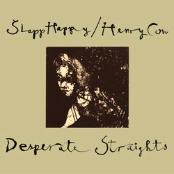

Tuesday, February the 3rd, 2009
back to: title, date or indexes
When the first babblings of Hooting Yard On The Air were heard across the aether almost five years ago, there was different theme music every week. After a while, a panel of experts settled on Caucasian Lullaby by Slapp Happy & Henry Cow to be the definitive theme and so it has remained to this day.
Mindful of the fact that this coming April will see the fifth anniversary of the show, Mr Key has been pondering whether or not to cast tradition aside, in a fit of what may be petulance, and to choose something different to begin the show and to play during those intervals when he stops reading to drink tea or to have a choking spasm. Incapable of making a decision, he is seeking the views of listeners. Please use the Comments here to “have your say”, as they say, even if—or especially if—you are someone who has never commented at Hooting Yard before. Those in favour of a change may wish to suggest an apt piece of music, although Mr Key cannot guarantee he will take the slightest bit of notice.
Whatever the final decision may be, every listener really ought to ensure that they are in possession of their own copy of Desperate Straights, the album from which Caucasian Lullaby is taken, and which is a unique masterpiece. Please purchase it directly from the ReR Megacorp, by clicking here. Now.
